Today
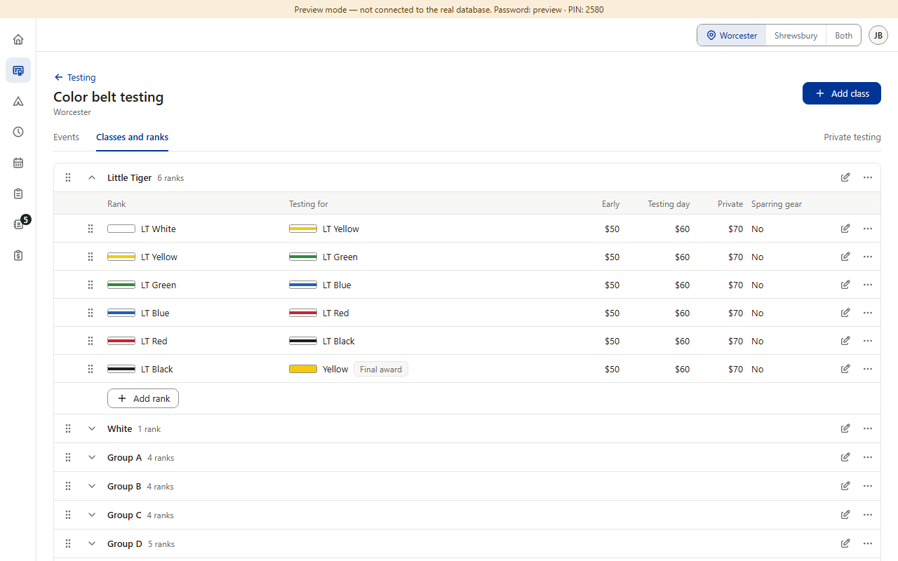
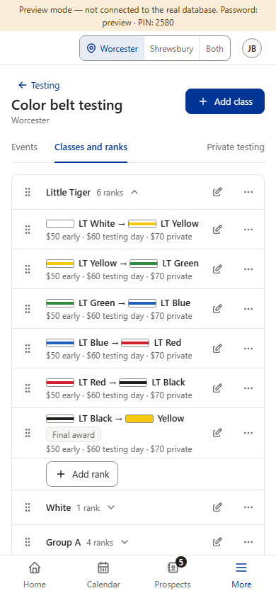
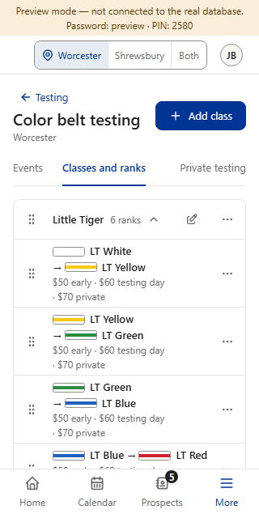
After (sheet 1): the Prices tab

Answered: Q1 B (Settings admins only; staff read the Prices tab), Q2 C (links only on the two ‘no classes yet’ hints), Q3 B (a school switch inside the part). This sheet is Question 4 of 4. (Preview screenshots, fake data, signed in as an admin unless marked staff, top bar on Worcester. The options are drawn on top of the real Color belt testing page with sheet 1’s Prices tab; nothing in the app is built yet.)



After CB14, Classes and ranks lives in Settings (admins only). Color belt testing keeps one tab with each class’s ranks, the Early / Testing day / Private prices, Sparring gear and each class’s final award — admins edit there, staff only read it (Question 1, B). Sheet 1 drew it as “Prices” (rulebook v1.023’s word). Only the tab’s name changes between the options; all three have the same gray line above the list: “Testing prices, sparring gear and each class’s final award. Classes and ranks are in Settings.” (staff read “… Classes and ranks are set by an admin.”). Tab bar measured in each picture: none of the names makes the bar scroll sideways, not even at 320 — today’s “Classes and ranks” fits too (the bar is 288 px wide at 320; the three tabs plus their gaps take 270 px today).
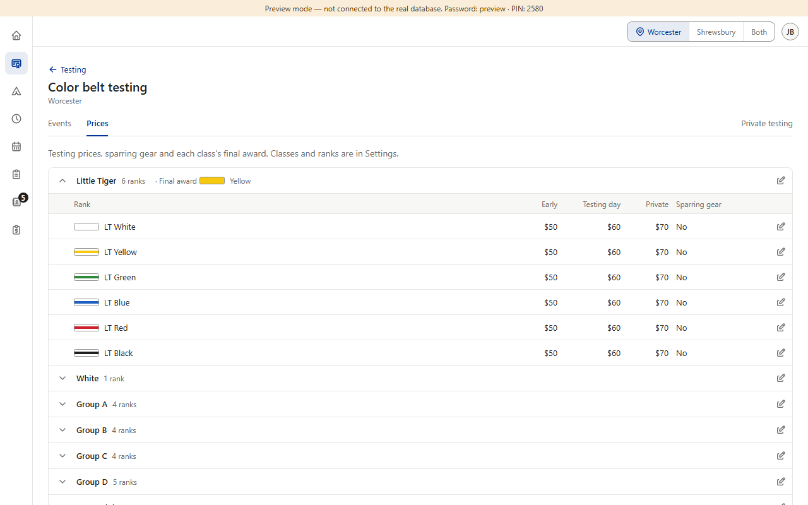
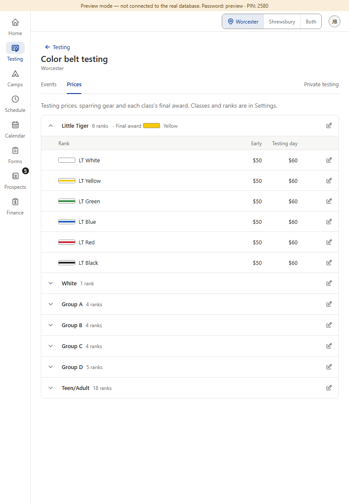
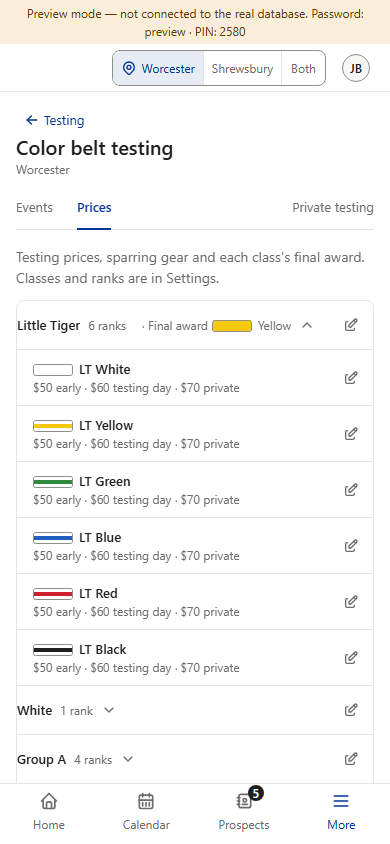
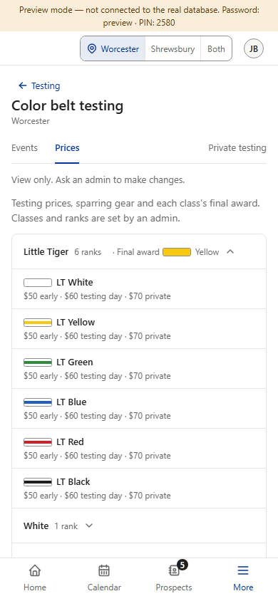
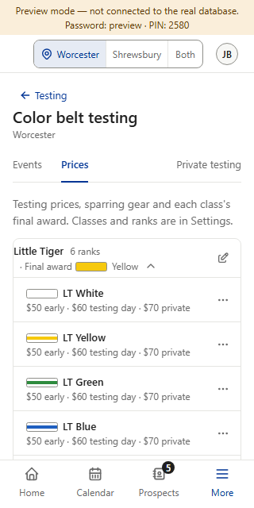
What it does: The tab is called “Prices”. The gray line under it names what else is there (sparring gear, final award) and where classes and ranks went.
+ Shortest name (34 px): lots of room on every phone, even if a fourth tab is ever added. Matches the rulebook’s v1.023 wording and Star testing’s own “Rubrics and prices”. One word staff can find quickly when a parent asks “how much is testing?”.
− Doesn’t name the final award or sparring gear — the gray line has to say it, and some people skip gray lines.
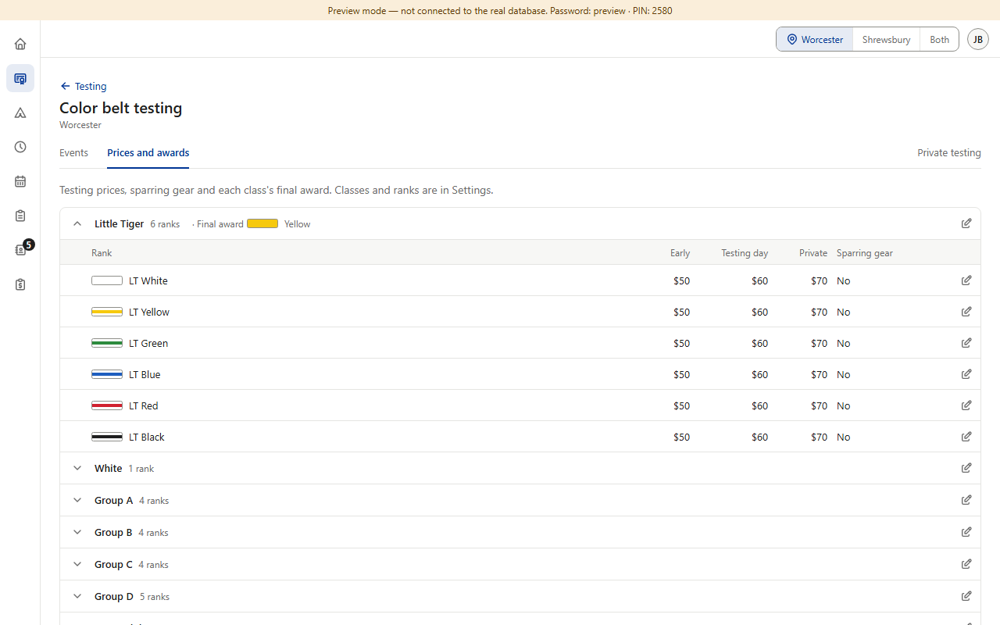
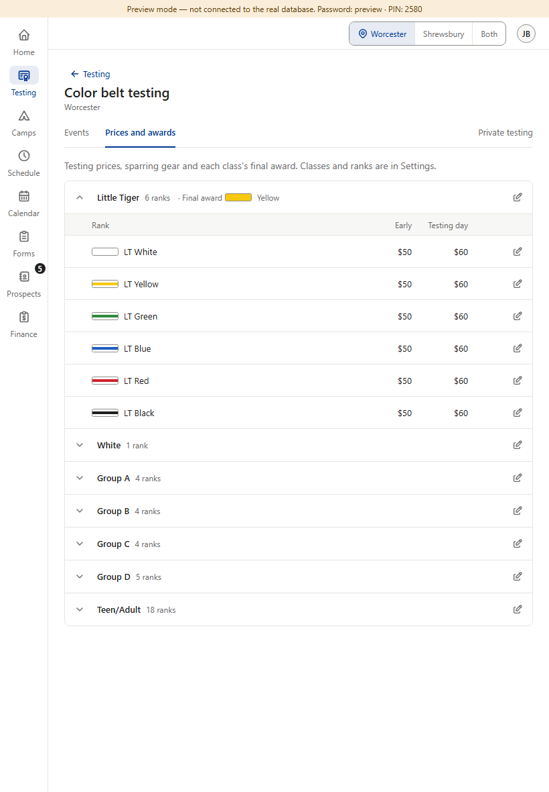
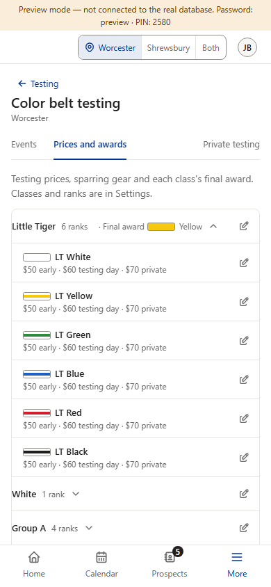
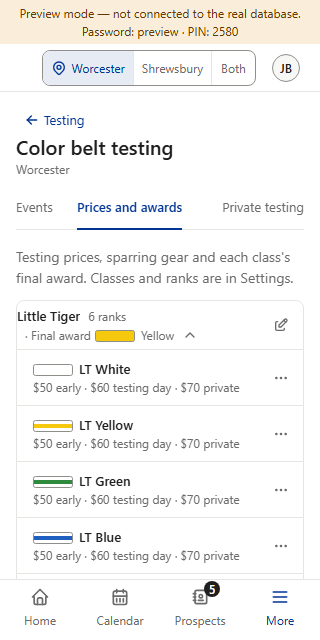
What it does: The tab is called “Prices and awards”, so the final award is in the name too.
+ Names both things admins come here to change. Fits today’s three tabs at 390 and at 320 (measured; the bar doesn’t scroll).
− Longest name (105 px, as long as today’s “Classes and ranks”): at 320 only 16 px are left, so a fourth tab or a slightly bigger font would make the bar scroll. Still leaves out sparring gear. “Awards” can be read as trophies or certificates rather than the belt the class ends on.
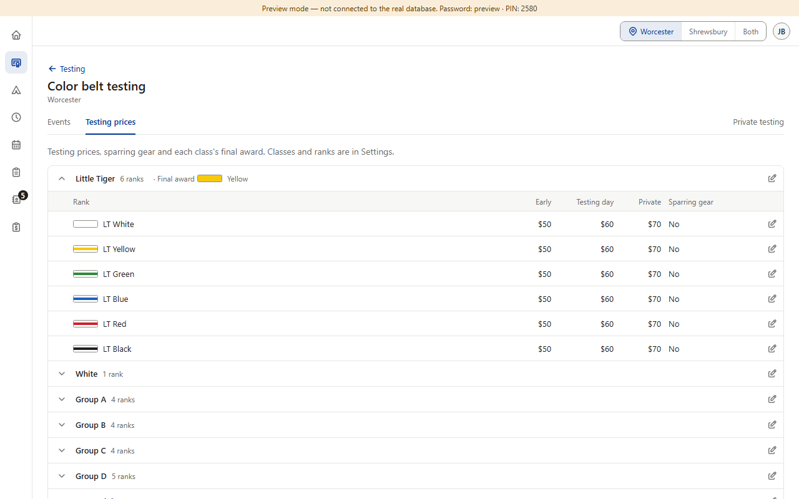
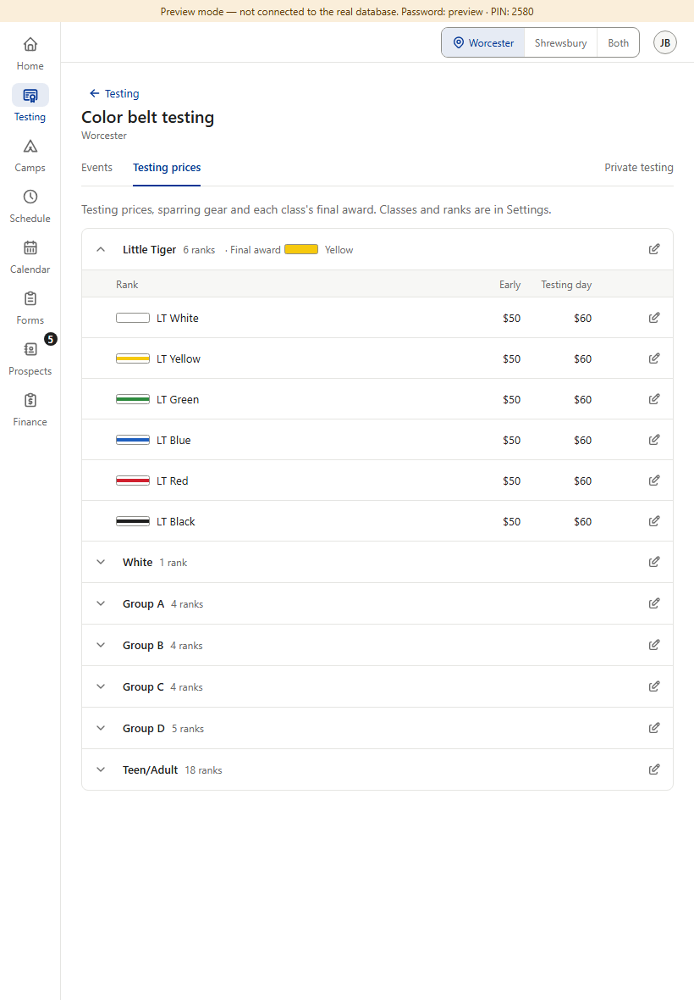
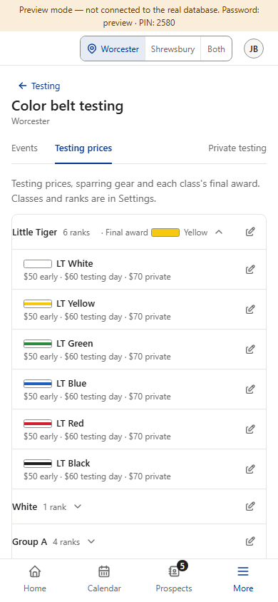
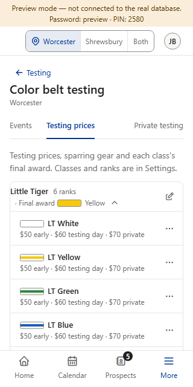
What it does: The tab is called “Testing prices”.
+ Says exactly what the prices are for (testing fees, not tuition) — clearer if someone lands here from Finance.
− “Testing” repeats the page’s own title (“Color belt testing”) right above it. Doesn’t name the final award or sparring gear. 80 px — between A and B.
Answer Question 4 (A, B or C).